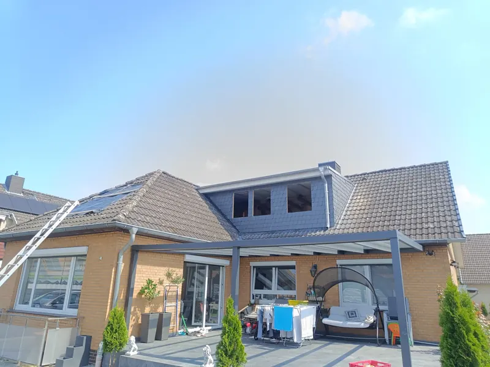

Tetőfedés
Új tető, teljes felújítás vagy javítás, akár a tetőszerkezettel együtt. A fedés alá páraáteresztő fólia és mért lécezés kerül, hogy a tető évtizedekig száraz maradjon.
- Új tető
- Felújítás
- Javítás
- Tetőszerkezet

Saját munkánk: cserépfedés vápával
Új tető, tetőfelújítás, lemezfedés és bádogos munkák garanciával. Bugyiból indulunk, és 200 km-es körzetben dolgozunk magánszemélyeknek és cégeknek.
+36 70 265 6704 A helyszíni felmérés ingyenes.
Mért lécköz, egyenes sorok, zárt szegélyek.
Évtizedekre tervezett rétegrend.
Ismert gyártók rendszerei, saját idomaikkal.
Garancia, számla, tartott határidő.
A gerinctől az ereszcsatornáig mindent egy csapat csinál. Így nincs mutogatás, ha valami nem stimmel – és nem is szokott.
Új tető, teljes felújítás vagy javítás, akár a tetőszerkezettel együtt. A fedés alá páraáteresztő fólia és mért lécezés kerül, hogy a tető évtizedekig száraz maradjon.

Cserepes lemez és trapézlemez lakóházra, garázsra, melléképületre. Könnyű, gyorsan elkészül, és szakszerű alátéttel csendes is.

Ereszcsatorna, lefolyó, kemény szegély, vápa- és kéménybádogozás. Minden bádogos lemezmunkát garanciával vállalunk.
PVC-lemezes és bitumenes vízszigetelés lapostetőre, garázsra, teraszra. A régi réteget felmérjük, és csak azt bontjuk, amit kell.

Fedett terasz, pergola, kocsibeálló – szerkezettel, fedéssel és bádogozással együtt, hogy a ház tetejéhez illő legyen.

Felépítmény, tetőablak, ereszalj-deszkázás, egyedi formájú tetők. Ha nem szokványos a feladat, kimegyünk, felmérjük, és megmondjuk, hogyan lesz belőle tartós megoldás.

A cserép csak a felszín. A tető attól lesz tartós, ami alatta van: a fólia, a lécezés, a szegélyek és a bádog. Mi ezeket ugyanolyan gondosan csináljuk, mint a látható részt.
Mért lécköz, zsinórban futó sorok, zárt csatlakozások. A részleteken múlik, hogy egy tető húsz vagy ötven évig bírja.
Páraáteresztő fóliák, szellőző gerinc, gyári rendszerelemek – a mai anyagokkal dolgozunk, nem régi beidegződésekkel.
Többéves tapasztalat cserép-, lemez- és lapostetőn, magán- és céges megrendelőknél.
Ismert gyártók rendszerei a hozzájuk tartozó idomokkal. Nem rakunk össze nem összeillő elemeket.
Javításnál a beázás okát keressük, nem csak a foltot tüntetjük el a plafonról.
Szabályos munkavédelem a tetőn, rendezett munkaterület, garancia az elvégzett munkára.
Minden kép a saját munkánkról készült. Egy referencia többet mond bármilyen ígéretnél.
Kiindulás Bontás, a régi tetőrész helyén nyitott szerkezet.
Szerkezet Az új felépítmény vázszerkezete és a fedés előkészítése.
Átadva Burkolt felépítmény, ablaksor, új fedés és bádogozás.
A Tető.pro mögött egy összeszokott tetőfedő csapat áll. Évek óta tetőkön dolgozunk: új tetőt építünk, régit újítunk fel, javítunk és bádogozunk.
Ugyanazok az emberek mérik fel a tetőt, akik utána megcsinálják. Ezért a felmérésen elhangzottak a kivitelezésnél is érvényesek. Pontosan megbeszéljük, mi készül, miből és mennyiért – és tartjuk magunkat hozzá.
Bugyiból indulunk, és 200 km-es körzetben vállalunk munkát Pest, Bács-Kiskun, Jász-Nagykun-Szolnok és Csongrád-Csanád megyében. Számlaképesek vagyunk, az elvégzett munkára garanciát adunk.
Négy lépés a hívástól az átadásig. Mindegyiknél tudja, mi történik és mi következik.
Hívjon vagy írjon. Pár kérdés alapján már a telefonban megmondjuk, mire számíthat.
Kimegyünk, felmérjük a tetőt, és írásos árajánlatot adunk. A felmérés ingyenes.
Egyeztetett kezdés, rendezett munkaterület, folyamatos tájékoztatás a munka alatt.
Közös bejárás, takarítás, számla és garancia. A tető ezután évtizedekig nem kérdés.
A leggyorsabb a telefon: pár perc alatt átbeszéljük, és időpontot egyeztetünk a helyszíni felmérésre.
+36 70 265 6704